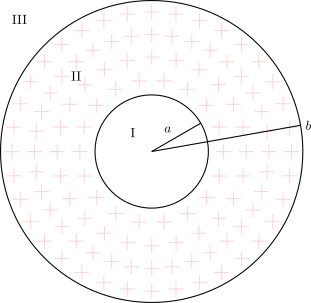
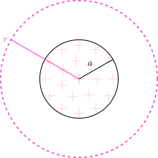
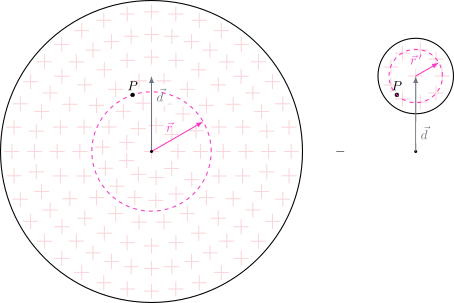

2.7 Cavidades en una Esfera#
Cavidad en el Centro#
{kind=link}

Campo eléctrico en la zona I:#
\(\vec{E}_{\text{I}}=\vec{0}\), porque la carga encerrada es nula.
Campo eléctrico en la zona II:#
Aplicando la Ley de Gauss:
Para la zona II también se puede utilizar el principio de superposición:
{kind=link}

{kind=link}

Sumando ambas contribuciones obtenemos el mismo resultado:
Campo eléctrico en la zona III:#
Cavidad Desplazada del Centro#
{kind=link}

Determinar el campo eléctrico en el punto \(P\), es decir, \(\vec{E}_{P}\). Aplicando superposición:
{kind=link}

Campo eléctrico \(\vec{E}_{1}\) para la esfera completa en el punto \(P\):#
Campo eléctrico \(\vec{E}_{2}\) para la cavidad en el punto \(P\):#
Dado que la relación vectorial de las distancias es \(\vec{d}+\vec{r}^{\, \prime}=\vec{r}\), el campo resultante es:
{kind=link}

Análisis conceptual:#
En este problema se presenta un error conceptual común al aplicar la Ley de Gauss. A pesar de que la carga encerrada en la cavidad es cero, el campo eléctrico en su interior no lo es. Esto se debe a que el campo eléctrico en un punto no depende solo de la carga encerrada en una superficie gaussiana que lo contenga, sino de todas las cargas de la distribución, tanto dentro como fuera de la superficie.
La Ley de Gauss establece que el flujo eléctrico neto a través de una superficie cerrada es proporcional a la carga neta encerrada:
Sin embargo, esta ley no implica que el campo sea cero si \(q_{\text{enc}}=0\). Para que el campo eléctrico sea cero en una región sin carga, se necesita una simetría esférica en la distribución de carga que rodea esa región. Un ejemplo perfecto es el interior de una esfera conductora o una cáscara esférica aislante con carga uniforme. En estos casos, para cualquier superficie gaussiana dentro, las líneas de campo que entran compensan exactamente a las que salen, dando un flujo total nulo y, por lo tanto, un campo eléctrico cero.
En nuestro problema, la carga no está distribuida simétricamente alrededor de la cavidad. La cavidad está desplazada con respecto al centro de la esfera grande. Esta asimetría es la clave. La carga fuera de la cavidad (el material aislante con densidad de carga \(\rho\)) contribuye al campo eléctrico en el interior de la cavidad, lo que hace que el campo sea no nulo y uniforme, como se demostró en el problema anterior usando el principio de superposición.
Preguntas de Análisis#
Show code cell source
from IPython.display import display, HTML
quiz_gauss_html = """
<style>
.fisi-quiz-container {
border: 1px solid #e0e0e0;
padding: 15px;
margin-bottom: 25px;
border-radius: 8px;
background-color: #f8f9fa;
font-family: -apple-system, BlinkMacSystemFont, "Segoe UI", Roboto, Arial, sans-serif;
}
.fisi-question {
font-weight: 600;
margin-bottom: 15px;
color: #2c3e50;
}
.fisi-option {
margin-bottom: 10px;
display: flex;
align-items: flex-start;
cursor: pointer;
}
.fisi-option input {
margin-top: 4px;
margin-right: 10px;
}
.fisi-check-btn {
background-color: #f73bc5;
color: white;
border: none;
padding: 8px 20px;
border-radius: 4px;
cursor: pointer;
font-size: 14px;
margin-top: 10px;
font-weight: 500;
}
.fisi-check-btn:hover { background-color: #ab2988; }
.fisi-feedback {
margin-top: 15px;
padding: 12px;
border-radius: 6px;
display: none;
font-size: 0.95em;
}
</style>
<script>
if (typeof window.checkFisiQuiz === 'undefined') {
window.checkFisiQuiz = function(radioName, feedbackId) {
var radios = document.getElementsByName(radioName);
var selected = null;
var feedbackDiv = document.getElementById(feedbackId);
for (var i = 0; i < radios.length; i++) {
if (radios[i].checked) {
selected = radios[i];
break;
}
}
feedbackDiv.style.display = 'block';
if (!selected) {
feedbackDiv.style.backgroundColor = '#fff3cd';
feedbackDiv.style.color = '#856404';
feedbackDiv.style.border = '1px solid #ffeeba';
feedbackDiv.innerHTML = '⚠️ Por favor, selecciona una opción.';
return;
}
var isCorrect = selected.getAttribute('data-correct') === 'true';
var msg = selected.getAttribute('data-fb');
if (isCorrect) {
feedbackDiv.style.backgroundColor = '#d4edda';
feedbackDiv.style.color = '#155724';
feedbackDiv.style.border = '1px solid #c3e6cb';
feedbackDiv.innerHTML = '✅ <strong>¡Correcto!</strong><br>' + msg;
} else {
feedbackDiv.style.backgroundColor = '#f8d7da';
feedbackDiv.style.color = '#721c24';
feedbackDiv.style.border = '1px solid #f5c6cb';
feedbackDiv.innerHTML = '❌ <strong>Incorrecto.</strong><br>' + msg;
}
};
}
</script>
<div class="fisi-quiz-container">
<div class="fisi-question">
1. Tienes dos esferas sólidas del mismo radio R y misma carga total Q. Una es conductora (cobre) y la otra es aislante no conductora con carga uniforme. Si mides el campo eléctrico exactamente en el centro (r=0) y a la mitad del radio (r=R/2), ¿qué observarás?
</div>
<label class="fisi-option">
<input type="radio" name="qgauss1" value="a" data-correct="true" data-fb="¡Correcto! En el centro (r=0), por simetría, ambos campos son nulos. Sin embargo, en un conductor las cargas se van a la superficie, por lo que el campo interior siempre es cero. En el aislante, la carga está distribuida en el volumen, por lo que en r=R/2 encierras carga y el campo crece linealmente.">
<span>En el centro de ambas el campo es cero, pero en r=R/2 el campo de la esfera de cobre es nulo y el de la esfera de plástico es distinto de cero.</span>
</label>
<label class="fisi-option">
<input type="radio" name="qgauss1" value="b" data-fb="Incorrecto. Recuerda que en una esfera aislante uniformemente cargada, el campo en el interior no es cero; crece de forma proporcional a la distancia r (E ∝ r).">
<span>En ambas esferas el campo es cero en cualquier punto interior, sin importar si es r=0 o r=R/2.</span>
</label>
<label class="fisi-option">
<input type="radio" name="qgauss1" value="c" data-fb="Incorrecto. En el centro exacto (r=0) de una esfera aislante uniforme, la carga encerrada es nula y, por simetría, los vectores se cancelan, resultando en un campo de cero.">
<span>El campo en el centro del plástico es el máximo de toda la distribución, mientras que en el cobre es cero.</span>
</label>
<button class="fisi-check-btn" onclick="checkFisiQuiz('qgauss1', 'feedback-gauss1')">Comprobar</button>
<div class="fisi-feedback" id="feedback-gauss1"></div>
</div>
<div class="fisi-quiz-container">
<div class="fisi-question">
2. Al aplicar la Ley de Gauss a un plano infinito cargado con densidad σ, se obtiene que la magnitud del campo es E = σ / (2ε₀). ¿Qué rasgo distintivo tiene este resultado físico?
</div>
<label class="fisi-option">
<input type="radio" name="qgauss2" value="a" data-fb="Incorrecto. El campo magnético se comporta de forma distinta. En electrostática, las líneas salen o entran del plano de forma paralela.">
<span>Que el campo eléctrico forma trayectorias circulares cerradas alrededor del plano.</span>
</label>
<label class="fisi-option">
<input type="radio" name="qgauss2" value="b" data-fb="Incorrecto. A diferencia de una carga puntual (cae con 1/r²) o un alambre (cae con 1/r), la fórmula del plano no contiene la variable de distancia.">
<span>Que el campo disminuye proporcionalmente al cuadrado de la distancia perpendicular a la placa.</span>
</label>
<label class="fisi-option">
<input type="radio" name="qgauss2" value="c" data-correct="true" data-fb="¡Exacto! Al no aparecer la distancia en la fórmula (E = σ / 2ε₀), concluimos que el campo no disminuye con la distancia; es uniforme (constante) en todo el espacio por encima y por debajo del plano.">
<span>Que el campo es completamente uniforme; no disminuye ni varía sin importar a qué distancia perpendicular nos encontremos del plano.</span>
</label>
<button class="fisi-check-btn" onclick="checkFisiQuiz('qgauss2', 'feedback-gauss2')">Comprobar</button>
<div class="fisi-feedback" id="feedback-gauss2"></div>
</div>
<div class="fisi-quiz-container">
<div class="fisi-question">
3. Se tiene una esfera aislante maciza y uniformemente cargada, pero que en su interior tiene una cavidad esférica vacía (un agujero) desplazada del centro. ¿Cómo es el campo eléctrico en el interior de esa cavidad?
</div>
<label class="fisi-option">
<input type="radio" name="qgauss3" value="a" data-fb="¡Cuidado! Este es un error muy común. Aunque q_enc = 0 en el hueco, la Ley de Gauss no implica que el campo sea cero si no hay simetría esférica perfecta alrededor del punto. Las cargas que están fuera del hueco también aportan al campo interior.">
<span>Es cero en todo el hueco, porque cualquier superficie Gaussiana trazada completamente dentro de la cavidad no encierra ninguna carga neta.</span>
</label>
<label class="fisi-option">
<input type="radio" name="qgauss3" value="b" data-correct="true" data-fb="¡Brillante! Utilizando el principio de superposición, al restar el campo vectorial de la 'esfera hueco' al de la esfera sólida, los términos radiales se simplifican dejando un campo que depende únicamente del vector distancia entre centros (d). Como d es constante, el campo en el hueco es constante en magnitud y dirección.">
<span>Es distinto de cero y completamente uniforme (constante en magnitud y dirección) en cualquier punto de la cavidad.</span>
</label>
<label class="fisi-option">
<input type="radio" name="qgauss3" value="c" data-fb="Incorrecto. Aunque intuitivamente uno podría pensar que el campo es más fuerte cerca del material cargado, la superposición vectorial demuestra que dentro del hueco el campo se vuelve perfectamente constante.">
<span>Es variable, siendo mucho más fuerte cerca de las paredes interiores del hueco y más débil en el centro de la cavidad.</span>
</label>
<button class="fisi-check-btn" onclick="checkFisiQuiz('qgauss3', 'feedback-gauss3')">Comprobar</button>
<div class="fisi-feedback" id="feedback-gauss3"></div>
</div>
"""
display(HTML(quiz_gauss_html))